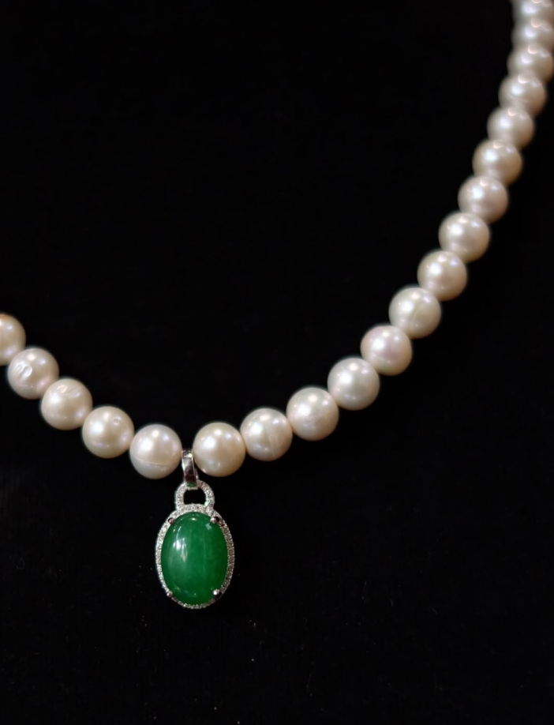

You’ll see the magic if you keep believing.
Just as diamonds are shaped under pressure, pearls are formed around an irritant. Beauty can emerge from adversity.
1998
Lily Purnama’s fascination with South Sea pearls began, paving the way for an enduring legacy of design, curation, and exploration.
